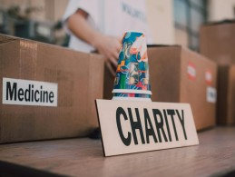
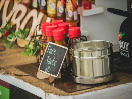

At Banks Road Roasters, we believe in giving back to our community. We are actively involved in various local initiatives and support numerous causes throughout the year.
Our Initiatives
-

Annual Fundraiser
Each year, we host a fundraiser to support local charities. Join us for a day of fun and give back to the community.
-
School Outreach Program
We partner with local schools to provide coffee education and resources, helping students learn about sustainable coffee practices.
-

Local Farmers' Market
Our team participates in the local farmers' market, offering coffee tastings and promoting organic farming.
-
Volunteer Days
We organize volunteer days where our team helps with community clean-up and other local service projects.